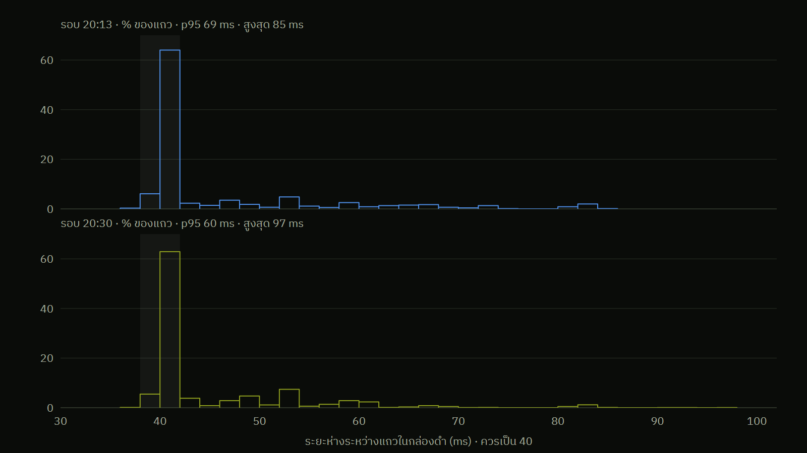

ภาคผนวก · ที่เจอไม่ตรงที่คาด
รอบคุมที่ตั้งไว้ 40 ms แต่บางรอบช้าถึง 97 ms
คาดไว้ลูปคุมรันทุก 40 ms แถวในกล่องดำห่างเท่ากันทุกแถว
เจอจริงราว 63% ตรง 40 ms ที่เหลือมีหางยาว p95 60–69 ms ช้าสุด 85–97 ms

ที่ทำให้ลูปช้า: Serial ไม่มีบัฟเฟอร์ส่ง · delay 3 ms ต่อบรรทัด BLE · BLE หลุดแล้วหยุด 200 ms · TEAM_SAVE เขียน flash
ถ้าค้างเกิน 250 ms ตัวประมาณมุมจะรีเซ็ตเป็นค่าแสงดิบ
แก้ (team-4): บัฟเฟอร์ส่ง Serial 4 KB + ห้าม TEAM_SAVE ใน AUTO · บนแท่น 7 ต.ค. ช้าสุด 97 → 55 ms
ข้อมูล: กล่องดำ รอบ 20:13 และ 20:30 (6 ต.ค.) · แถบเทา = 38–42 ms
B4